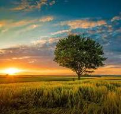
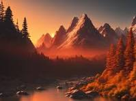

The Beauty of Nature
Nature is an endless expanse of wonder and beauty. From the towering mountains to the vast oceans, every element of nature has a story to tell. The colors, the sounds, and the textures all combine to create a breathtaking experience that is both humbling and inspiring.
One of the most captivating aspects of nature is its diversity. No two places are exactly alike, and even the same place can look entirely different depending on the time of day or the season. This ever-changing landscape is a testament to the dynamic and resilient nature of our planet.
Exploring nature can also be a deeply personal experience. It offers a chance to disconnect from the hustle and bustle of everyday life and reconnect with the natural world. Whether it's a walk in the park, a hike in the mountains, or a swim in the ocean, spending time in nature can bring peace and clarity to our minds and souls.